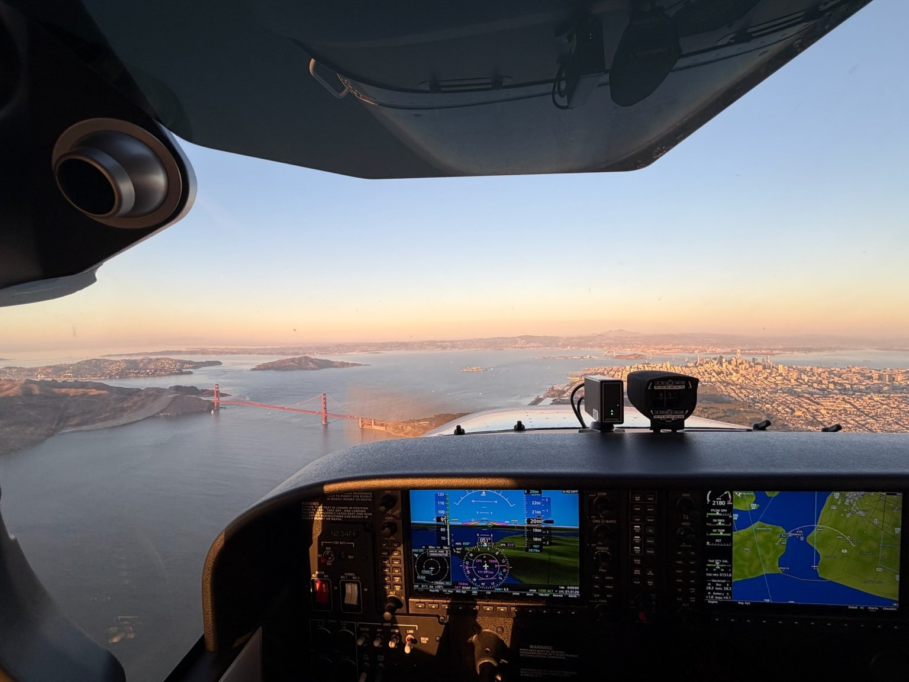
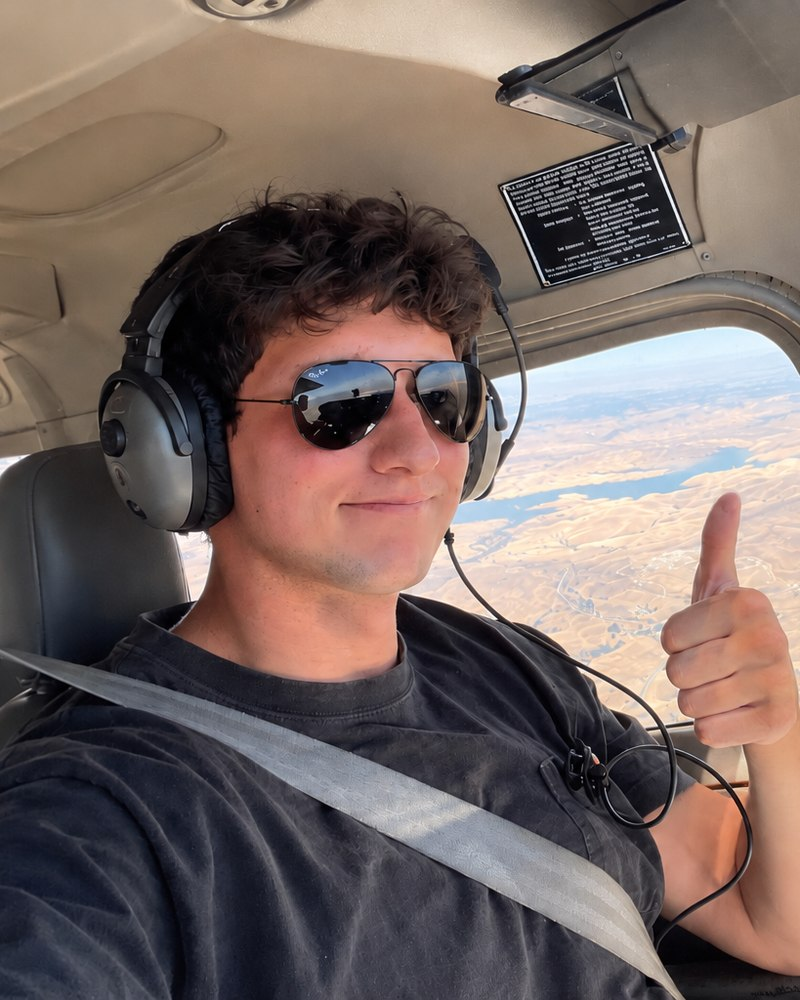

Private Pilot
Develop the fundamentals of aircraft control, decision-making, and safe operations from day one.
Learn more ↗One lesson at a time, build the skills, judgment, and confidence to fly well. Focus on the process; the milestones will follow.

FLYING IN THE SAN FRANCISCO BAY AREA
I'm a Bay Area pilot who finds some of the greatest fulfillment in challenging myself to become a better aviator. Whether it's exploring a new aspect of flying or refining a skill I've practiced countless times, I'm always looking for opportunities to learn and improve. Just as important to me is a genuine love for serving others and helping people succeed.
My approach to teaching is grounded in preparation, curiosity, and taking real pride in the work we put in together.
Some of the most meaningful experiences in my own flight training have come from learning alongside experienced aviators who challenged me to think differently and develop a deeper understanding of flying. Those experiences have shaped my appreciation for mentorship and inspired me to share what I've learned with others.
Get to know me ↗Every flight has a purpose. We'll build each skill to standard, reinforce it through positive challenges, and take pride in the progress along the way.
Develop the fundamentals of aircraft control, decision-making, and safe operations from day one.
Learn more ↗Refine aircraft handling, planning, and precision with an emphasis on professional standards.
Learn more ↗Strengthen proficiency, refresh critical knowledge, and build a targeted plan for improvement.
Learn more ↗A checkride matters, but it isn't the whole point. My approach is to focus on what's in front of us: prepare well, understand the why, practice with intention, and keep raising the bar as confidence grows. When you build real proficiency, the result takes care of itself.
More about my approach ↗“The goal isn't just to pass a checkride. It's to walk away a more capable, confident pilot — and someone who's learned to take pride in the process.”
The best progress doesn't happen only in the airplane. Find FAA references and practical study materials to build your understanding between lessons.